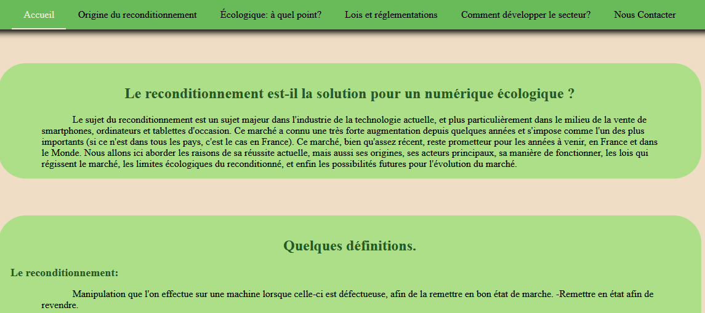

Cette SAE* se concentre sur la recherche bibliographique et le développement web. Lors de celle-ci, nous avions dû en équipe de 4 ou 5 personnes :
Nous avions alors choisi la controverse suivante : Le reconditionnement est-il la solution pour construire un numérique écologique ?
Ce sujet me tient beaucoup à cœur , car il s'implique dans une démarche écologique de longue durée et ça me semblait donc le parfait sujet et moment pour me renseigner plus sur l'écologie dans le monde de la technologie et le reconditionnement !
Mais qu'est-ce qu'une Controverse Sociotechnique?
Une controverse sociotechnique est un débat, une situation d'incertitude qui mélange le social, la politique, le scientifique, la technique et surtout la morale. Même si elles apparaissent dans l'espace public, elles supposent pourtant toujours des débats autour des connaissances d’ordre scientifique. Source : Mines Paris
*SAE = Situation d'Apprentissage et d'Évaluation, c'est un projet qui se passe dans le Cadre du BUT (Bachelor Universitaire de Technologie). Les SAE sont généralement découpées en livrable (
Cette SAE a eu lieu lors du premier semestre du BUT Informatique et s'applique à l'UE "Collaborer au sein d'une équipe informatique" qui se concentre principalement sur la communication.
2 mois, entre la fin du mois d'Octobre et celle du mois de Décembre.
Le logiciel Zotero et des sites regroupant des articles tels qu'EuroPresse, pour la recherche bibliographique.
HTML/CSS pour le site et Replit pour travailler simultanément.
Cette étape est certainement la plus fastidieuse mais intéressante du projet.
En effet, nous avons passé de très longues heures à lire des articles, des podcasts, des vidéos, des documents scientifiques, entrecouper des sources et informations, vérifier la fiabilité de celles-ci.
Cela m'a permis de comprendre à quel point il était important de vérifier ses sources. En effet, tout ce qui se trouve sur Internet n'est pas forcément vrai !
Cette étape constituait dans un premier temps à commenter la bibliographie que l'on avait auparavant et dans un deuxième temps, écrire une synthèse structurée.
Pour ma part, je me suis concentrée sur la section : Développer le reconditionné : que font les acteurs ? que j'ai ensuite découpé en 3 sous-parties :
Tous les arguments et données présentés devaient provenir d'un choix de documents qui faisait partie de notre bibliographie commune.
Vous pourrez retrouver ce texte dans la partie : Lien vers le projet.
Nous avions choisi de faire un site sobre tout en étant en lien avec le sujet de notre controverse (d'où le choix évident de la couleur verte).
C'était la première fois où j'utilisais le site Replit pour travailler en équipe.
Ce projet m'a principalement permis d'approfondir mes connaissances sur le sujet-débat de l'écologie dans le numérique et le reconditionnement.
Il m'a aussi permis de renforcer mes notions en HMTL/CSS.
Lien du site :
Lors de ce projet, chaque personne de l'équipe avait une importance, des tâches et un rôle différents que ce soit lors de la recherche ou du site web. Pour le site web, par exemple, certains s'occuper du css, de la page d'accueil, des pages recherches ou du html pur.
Ceci est un projet en équipe de 4. Pour pouvoir bien travailler et communiquer dans l'équipe il est important de développer et d'acquérir rapidement des compétences interpersonnelles.